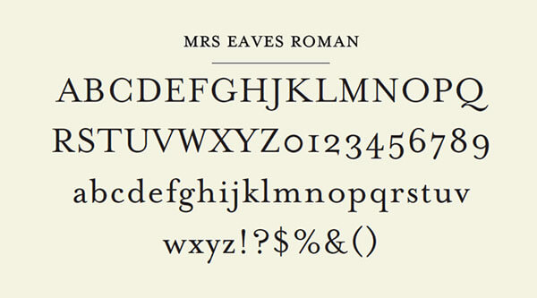

Jan Tschichold
Typographer, Author, Teacher, Cultural Bolshevist
Jan Tschichold (1902 – 1974) was one of the key figures in the development of typography and graphic design in the early 20th century. Born in Germany as the son of a sign painter, he was immersed in typography from a very early age. His contribution to modernism and worship of sans serif fonts seen his work confiscated by the Gestapo “for the protection of the German people”, which eventually seen to his expatriation to Switzerland.
Education
Although having aspirations to pursue fine art at a young age, Tschichold was encouraged by his parents to become an illustration teacher, where he would have stable job prospects. After finishing his schooling he would begin teaching seminars in Grimma, Leipzig district of Germany, his birthplace, at only 14 years of age.
A deep impression, however, was planted in his mind in 1914. At the World’s Fair for Books and Graphics, the young Tschichold found his love for calligraphy in the books of Edward Johnston and Rudolf von Larisch, which covered calligraphy, ornamental script and writing.
At the age of 17 he abandoned his career in teaching to chase his newfound adoration for typographic studies. He enrolled in the Academy for Graphic Arts in Leipzig in 1919.
He studied a range of disciplines such as engraving, bookbinding and woodcutting. But it seemed that his time of study didn’t involve a great deal of learning, his Professor, Hermann Delitsch, said that there was nothing he could teach Tschichold that he wasn’t already aware of. Tschichold had quickly become a favorite student of the Professor, who gave him free reign over his studies.
In 1921, the director of the academy, von Tiemann, eventually asked Tschichold to take evening classes in scriptwriting, and also gave his star student his own studio.
The Influence of the Bauhaus
In his early years, Tschichold had actually become immersed in serif fonts. He adored one of the first fonts to be created by German typographer Rudolf Koch, Maximillian Grotesk, a font very reminiscent of black letter. Tschichold began to collect old script master books, notably that from Pierre Simon Fournier and would use his calligraphic skills to earn commission for his contributions to the Leipzig trade fairs where he would create advertisements.
Taking into consideration the admiration he had for this old-school type, it would be an understatement to say that Tschichold was fascinated by the display of work he seen at the Bauhaus exhibition in 1924.
The young designer’s sudden change of heart seen him jump from his passion for black letter and scripts to straight edge letters, composed of simple shapes with an absence of flares. He quickly began to resent the style of type that he held in high esteem less than a month ago. He was so mesmerized by the work of Russian constructivist artists at the event that he assumed a Slavic nom-de-plume Ivan Tschichold.
A year after beginning his profession as a typography designer, Tschichold designed a poster for Warsaw based publisher Philobiblon in 1924. This would serve as one of Tschichold’s most renowned pieces. He understood himself as a typography designer, a profession that had not existed beforehand and would also see itself as an innovator in modernist graphic design.
With his new ideals firmly established, Tschichold led a militaristic betrayal against his old principles. If it was not set in a sans serif, or had symmetrical properties that resembled the norm of the time, it was simply unacceptable. He believed in defying the old established rules was the key to typography’s own revolution.
In 1925 he featured in a special edition of the design magazine ‘Typographic News’ with a manifest that divided and provoked chaos in the design community. Whether it was viewed in a positive or negative light, Tschichold’s name resonated in the mind of every typesetter of the era. The key principles he laid out were:
- The new typography is purposeful
- The purpose of all typography is communication
- Communication must be made in the shortest, simplest, most definite way
The New Typography
Mrs Eaves is named after Sarah Eaves, the woman who became John Baskerville’s wife. As Baskerville was setting up his printing and type business, Mrs. Eaves moved in with him as a live-in housekeeper, eventually becoming his wife after the death of her first husband, Mr. Eaves. Mrs Eaves is a revival of the types of English printer and punchcutter John Baskerville, and is related to contemporary Baskerville typefaces.
Like Baskerville, Mrs Eaves, cut by Zuzana Licko of Émigré, has a near vertical stress, departing from the Old Style model. Identifying characters, similar to Baskerville’s types, are the lowercase g with its open lower counter and swash-like ear. Both the roman and italic uppercase Q have a flowing swash-like tail. The uppercase C has serifs at top and bottom; there is no serif at the apex of the central junction in uppercase W; and the uppercase G has a sharp spur suggesting a vestigial serif.
“The essence of the New Typography is clarity. This puts it into deliberate oppositionto the old typography whose aim was ‘beauty’.”
Tschichold would move to Berlin in 1926 after designing a number of covers for the Insel publishing firm in Leipzig. A short time later Paul Renner, another renowned German typeface designer who is recognized for creating the Futura font, contacted him. Initially Renner enquired whether Tschichold was interested in filling the vacancy he was leaving at the Frankfurt School of Applied Arts.
Tschichold ultimately moved to Munich where Renner was establishing the new Munich master school. Tschichold began teaching calligraphy and typography here in 1926. Within the following year he would create a number of film posters for the Munich based Phoebus Palace cinema.
 Top